The viewing angle is large
true color
Dynamic picture quality is excellent
Energy saving and environmental protection
● 1024X600 hd vision
Resolution for hd 1024X600 dot matrix
It is more delicate than an 800X480 ordinary screen
● Tempered glass touch panel
Hardness up to 6H, more durable and more scratch-resistant
● External audio output interface
Built-in power amplifier circuit
3.5mm external audio interface
● Used as a mini PC monitor
Support raspberry pie, Banana Pi, BB Black, and other mainstream development board
Support Raspbian, Kali Linux, Ubuntu, and other mainstream systems, single touch plug and play without a driver.
● Used as a computer display
Support win10/win8/win7 system, support five-point touch plug and play driver
Data Download:http://www.lcdwiki.com/7inch_HDMI_Display-H
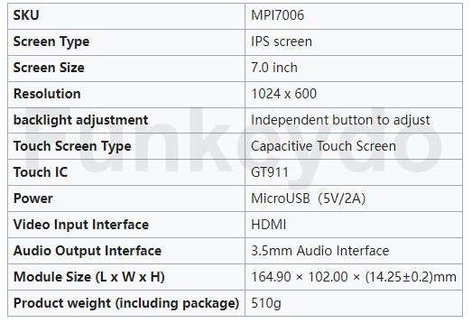
Interface Description
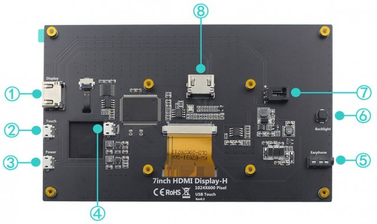
* 7 inch IPS full view display
* This product has 3.5mm headphone jack, support HDMI audio input, Headset audio
output.
* Built-in Backlight adjustment button, The interface and key functions are as follows:
① HDMI Interface
Input HDMI signal, using HDMI cable connection,commonly used to connect to the computer.
② Touch Interface
Transfer touch signal, connect with micro USB cable,provide touch and power supply function, commonly used to connect computer.
③ Power Interface
Connect to the power supply and use micro USB cable to connect. Only power supply function is provided.
④ Touch Interface
Transmit touch signal, connect with micro USB cable,provide touch and power supply function, commonly used to connect Raspberry Pi.
⑤ 3.5mm Audio Interface
Output audio signal, connect audio output device, such as headphones.
⑥ Backlight Adjustment Button
Adjust the backlight brightness of the display screen.With each click, the backlight brightness increases by 10, the maximum increases to 100, and then starts from 0. Press and hold for 3 seconds to turn off the backlight.
⑦ Cooling Fan Interface
Connect cooling fan.
⑧ HDMI Interface
Input HDMI signal, connect with HDMI adapter, only used to connect to the Raspberry Pi.
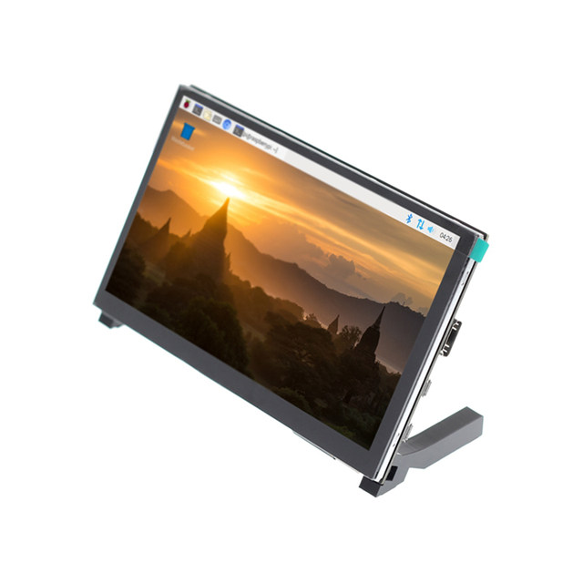
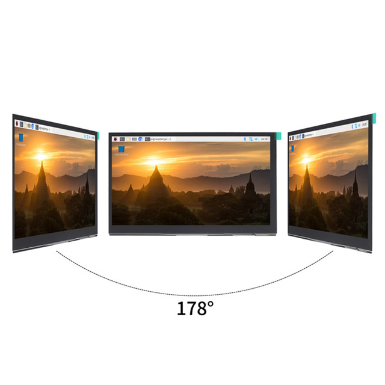
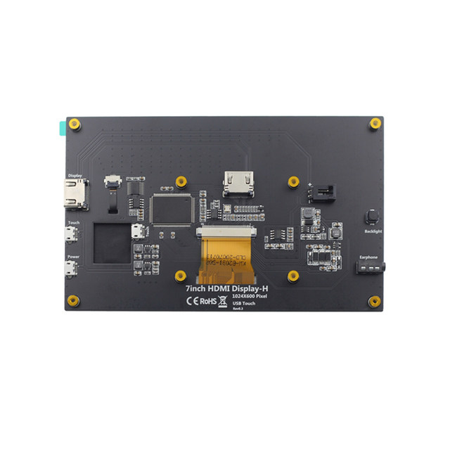
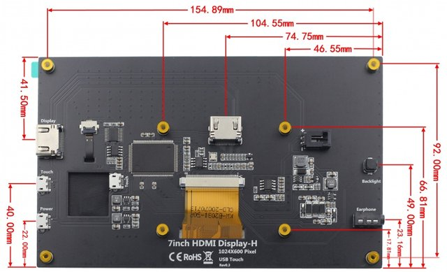
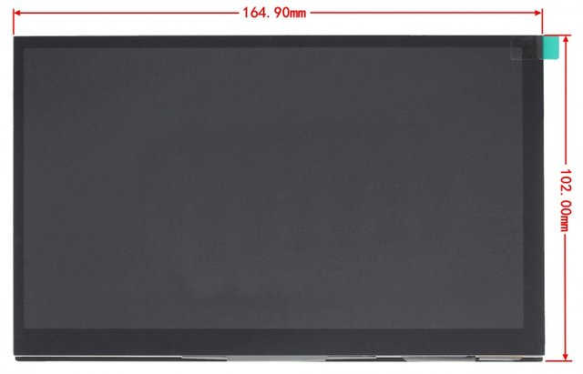
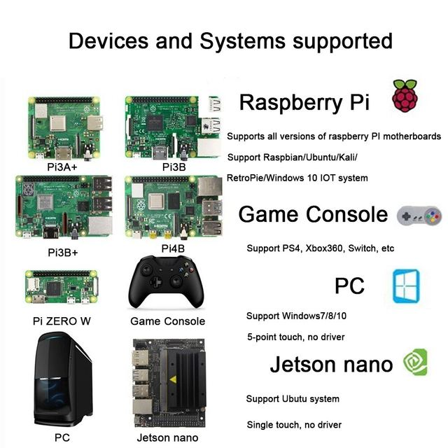
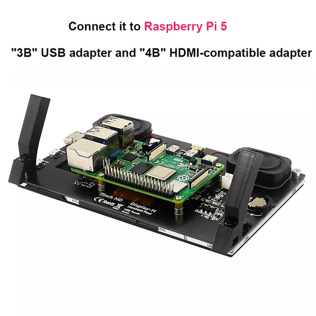
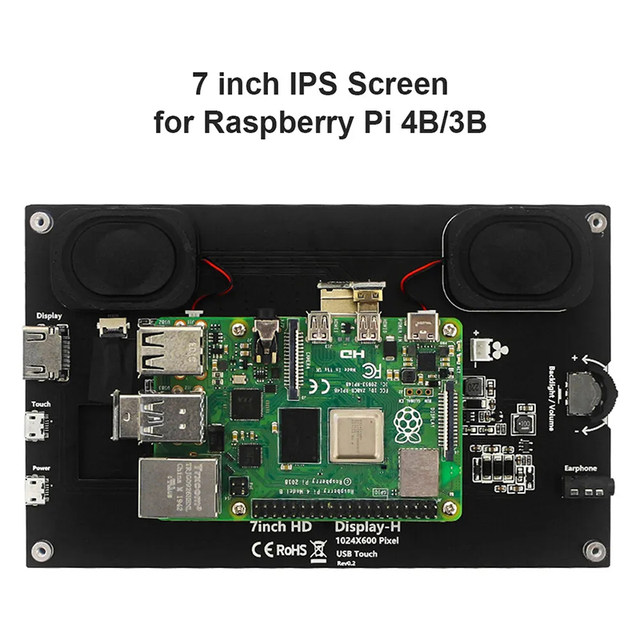
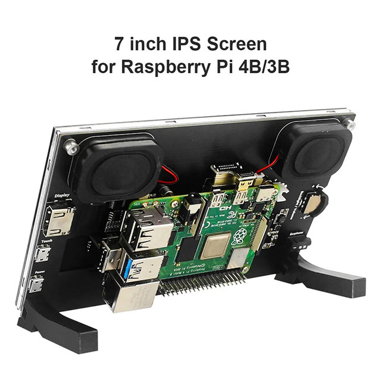
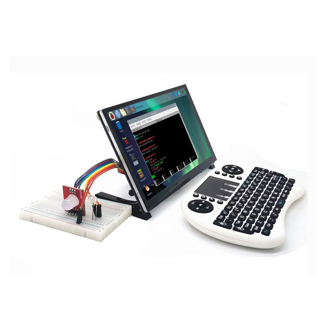
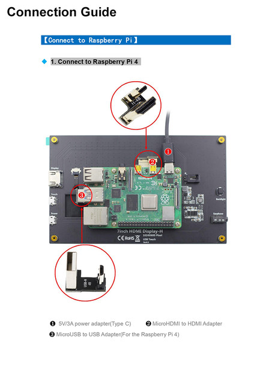
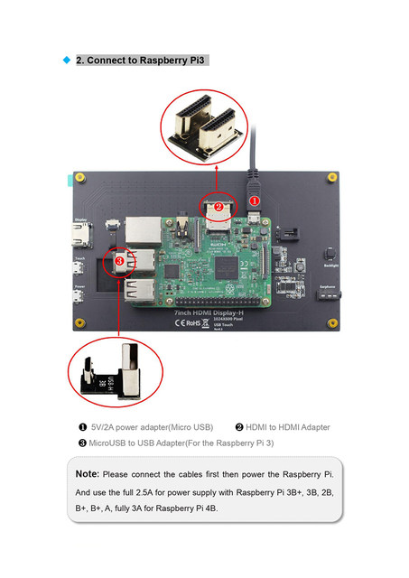
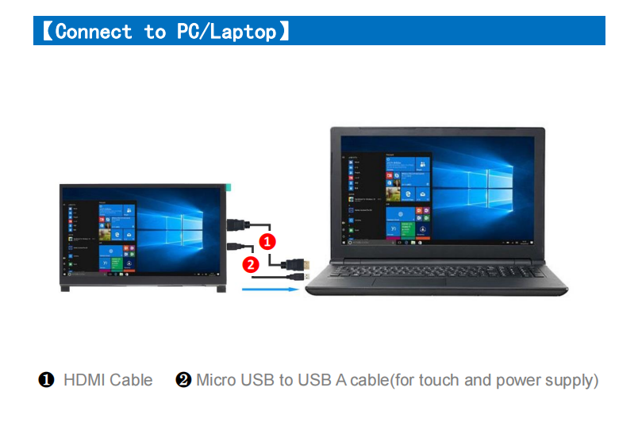
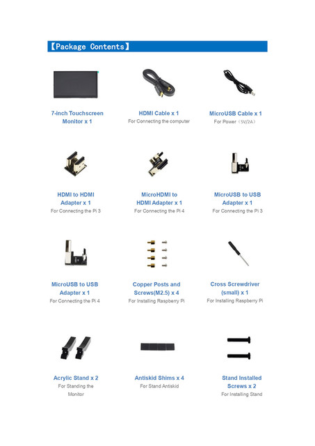
Quick Start
Working with Raspberry Pi
1. Download the latest Raspbian image from the official directory and follow the official
tutorial steps to install the system.
2. Open the config.txt file in the root directory of Micro SD card and add the following
code at the end of the file, save and exit the Micro SD card:
hdmi_force_edid_audio=1
max_usb_current=1
hdmi_force_hotplug=1
config_hdmi_boost=7
hdmi_group=2
hdmi_mode=87
hdmi_drive=2
display_rotate=0
hdmi_cvt 1024 600 60 6 0 0 0
3. Insert Micro SD card, connect the 7inch HDMI Display (S) to Raspberry Pi, connect the
power to boot.
Work as HDMI touch monitor
This product can be used as the HDMI touch monitor of Windows computer, only need to
connect HDMI interface and TOUCH interface, can normally display and support up to five
points touch.